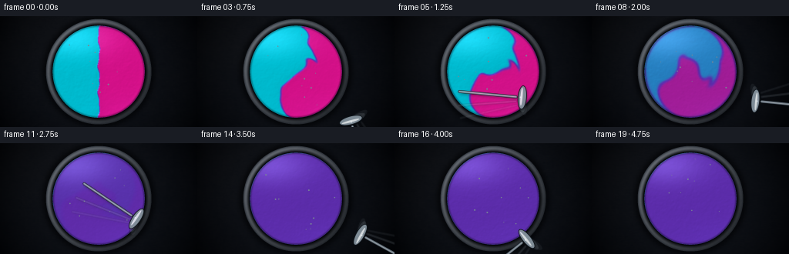
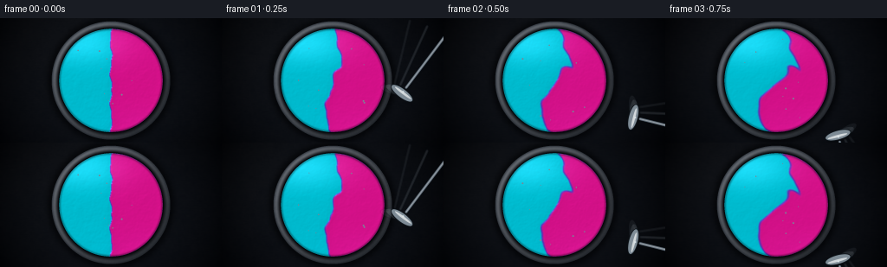
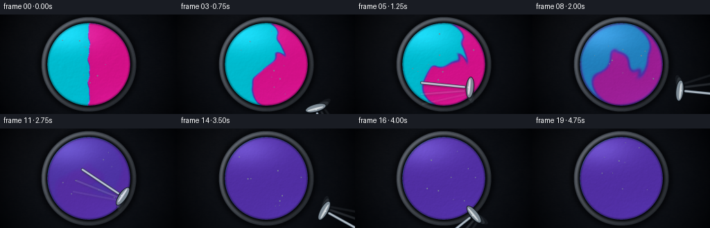
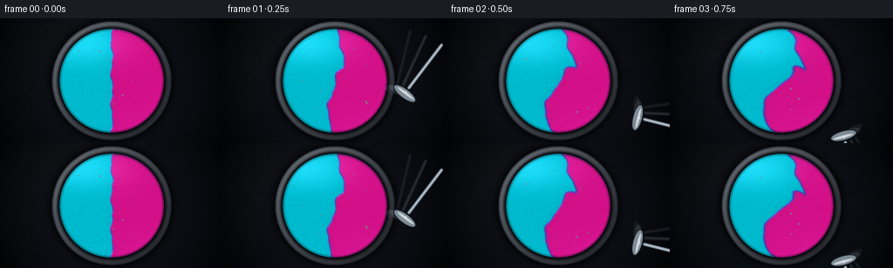

CODING AGENTS AS PIXEL WORLD MODELS
traex/DeepSeek-V4.1-Flash · phygen_124
点击播放 · 原生 RGB 像素
逐轮保存的候选
回放视频、检查图与代码变化。
每份候选均可单独播放。实际图片检查记录在下方工具轨迹中。
候选 01播放与检查图
点击播放 · 原生 RGB 像素


展开代码变化
--- 上一保存版本
+++ 本次保存版本
@@ -0,0 +1,428 @@
+from __future__ import annotations
+
+from pathlib import Path
+
+import cv2
+import numpy as np
+from scipy.ndimage import gaussian_filter, map_coordinates
+
+import artifact_io
+
+
+ROOT = Path(__file__).resolve().parent
+WIDTH = 256
+HEIGHT = 144
+FRAMES = 20
+FPS = 4.0
+
+# Simulation is modestly supersampled; the final image is rendered at 4x.
+SIM_W = 384
+SIM_H = 216
+SUPERSAMPLE = 4
+OUT_W = WIDTH * SUPERSAMPLE
+OUT_H = HEIGHT * SUPERSAMPLE
+
+CYAN = np.array([2, 205, 226], dtype=np.float32)
+VIOLET = np.array([104, 53, 188], dtype=np.float32)
+MAGENTA = np.array([232, 23, 151], dtype=np.float32)
+
+
+def smoothstep(edge0: float, edge1: float, x: np.ndarray | float) -> np.ndarray:
+ t = np.clip((x - edge0) / (edge1 - edge0), 0.0, 1.0)
+ return t * t * (3.0 - 2.0 * t)
+
+
+def normalized(array: np.ndarray) -> np.ndarray:
+ return array / (np.max(np.abs(array)) + 1e-8)
+
+
+def fractal_noise(rng: np.random.Generator, height: int, width: int) -> np.ndarray:
+ noise = np.zeros((height, width), dtype=np.float32)
+ weight_sum = 0.0
+ for sigma, weight in ((2.0, 0.35), (5.0, 0.28), (13.0, 0.22), (31.0, 0.15)):
+ layer = rng.normal(0.0, 1.0, (height, width)).astype(np.float32)
+ layer = gaussian_filter(layer, sigma=sigma, mode="reflect")
+ layer = normalized(layer)
+ noise += weight * layer
+ weight_sum += weight
+ noise /= weight_sum
+ return normalized(noise)
+
+
+def make_initial_paint(rng: np.random.Generator) -> tuple[np.ndarray, np.ndarray, np.ndarray]:
+ yy, xx = np.mgrid[:SIM_H, :SIM_W].astype(np.float32)
+ cx = SIM_W * 0.5
+ cy = SIM_H * 0.5
+ radius = 90.0
+ r = np.hypot(xx - cx, yy - cy)
+ disc = (r < radius - 0.7).astype(np.float32)
+
+ # A softly irregular seam makes the equal pools feel poured, not diagrammatic.
+ seam = cx + 1.7 * np.sin((yy - cy) * 0.115) + 0.8 * np.sin((yy - cy) * 0.255 + 0.9)
+ cyan = (xx < seam).astype(np.float32) * disc
+ magenta = (xx >= seam).astype(np.float32) * disc
+
+ # Equal total pigment is part of the prompt. Balance the two fields exactly.
+ target = 0.5 * (cyan.sum() + magenta.sum())
+ cyan *= target / max(cyan.sum(), 1.0)
+ magenta *= target / max(magenta.sum(), 1.0)
+
+ # Small thickness irregularities remain visible through the glossy lighting.
+ fine = fractal_noise(rng, SIM_H, SIM_W)
+ thickness = 0.014 * fine + 0.006 * gaussian_filter(rng.normal(size=(SIM_H, SIM_W)), 1.2)
+ cyan = np.clip(cyan + disc * thickness, 0.0, 1.08)
+ magenta = np.clip(magenta - disc * thickness, 0.0, 1.08)
+ cyan *= disc
+ magenta *= disc
+ return cyan.astype(np.float32), magenta.astype(np.float32), disc
+
+
+def stirrer_pose(t: float) -> tuple[np.ndarray, np.ndarray, np.ndarray]:
+ center = np.array([SIM_W * 0.5, SIM_H * 0.5], dtype=np.float32)
+ angle = -2.15 + 4.35 * t + 0.22 * np.sin(2.7 * t)
+ orbit = 23.0 + 5.2 * np.sin(1.65 * t + 0.35)
+ tip = center + orbit * np.array([np.cos(angle), np.sin(angle)], dtype=np.float32)
+ radial = tip - center
+ radial /= np.linalg.norm(radial) + 1e-6
+ tangent = np.array([-radial[1], radial[0]], dtype=np.float32)
+ return tip, radial, tangent
+
+
+def velocity_field(t: float, xx: np.ndarray, yy: np.ndarray, disc: np.ndarray) -> tuple[np.ndarray, np.ndarray]:
+ cx = SIM_W * 0.5
+ cy = SIM_H * 0.5
+ x = xx - cx
+ y = yy - cy
+ r = np.hypot(x, y)
+ edge_taper = np.clip(1.0 - (r / 91.5) ** 8, 0.0, 1.0)
+
+ # A broad turnover keeps the whole pool alive.
+ omega = 0.56 + 0.12 * np.sin(1.4 * t)
+ u = -omega * y
+ v = omega * x
+
+ # Three changing vortices fold the two pigments through one another.
+ for i in range(3):
+ orbit_angle = 0.75 * t + i * (2.0 * np.pi / 3.0)
+ vx = 31.0 * np.cos(orbit_angle)
+ vy = 26.0 * np.sin(orbit_angle + 0.5 * i)
+ dx = xx - (cx + vx)
+ dy = yy - (cy + vy)
+ sigma = 23.0 + 3.0 * np.sin(0.9 * t + i)
+ strength = 1.55 * np.sin(1.75 * t + i * 2.1) + 0.55 * np.sin(3.15 * t + 0.7 * i)
+ envelope = np.exp(-(dx * dx + dy * dy) / (2.0 * sigma * sigma))
+ u += -strength * dy * envelope
+ v += strength * dx * envelope
+
+ # The fast local vortex around the blade is the dominant mixing source.
+ tip, radial, tangent = stirrer_pose(t)
+ dx = xx - tip[0]
+ dy = yy - tip[1]
+ sigma = 17.0
+ envelope = np.exp(-(dx * dx + dy * dy) / (2.0 * sigma * sigma))
+ strength = 3.25 * (0.82 + 0.18 * np.sin(4.8 * t))
+ u += -strength * dy * envelope
+ v += strength * dx * envelope
+
+ # A short directional drag at the blade makes a fresh furrow in the paint.
+ blade = np.exp(-(dx * dx + dy * dy) / (2.0 * 8.0 * 8.0))
+ u += 34.0 * tangent[0] * blade
+ v += 34.0 * tangent[1] * blade
+
+ return (u * edge_taper * disc).astype(np.float32), (v * edge_taper * disc).astype(np.float32)
+
+
+def advect(field: np.ndarray, xx: np.ndarray, yy: np.ndarray, u: np.ndarray, v: np.ndarray, dt: float) -> np.ndarray:
+ sx = xx - u * dt
+ sy = yy - v * dt
+ return map_coordinates(field, [sy, sx], order=1, mode="constant", cval=0.0).astype(np.float32)
+
+
+def simulate() -> tuple[list[np.ndarray], list[np.ndarray], np.ndarray]:
+ rng = np.random.default_rng(1242026)
+ cyan, magenta, disc = make_initial_paint(rng)
+ yy, xx = np.mgrid[:SIM_H, :SIM_W].astype(np.float32)
+ initial_total = float(cyan.sum())
+ frames_c: list[np.ndarray] = []
+ frames_m: list[np.ndarray] = []
+
+ substeps = 7
+ for frame_index in range(FRAMES):
+ t = frame_index / FPS
+ if frame_index > 0:
+ for step in range(substeps):
+ local_t = t - (substeps - 1 - step) * (1.0 / FPS) / substeps
+ u, v = velocity_field(local_t, xx, yy, disc)
+ dt = (1.0 / FPS) / substeps
+ cyan = advect(cyan, xx, yy, u, v, dt)
+ magenta = advect(magenta, xx, yy, u, v, dt)
+ cyan = gaussian_filter(cyan, 0.32, mode="nearest") * disc
+ magenta = gaussian_filter(magenta, 0.32, mode="nearest") * disc
+
+ # Keep equal amounts after boundary interpolation.
+ total = float(cyan.sum() + magenta.sum())
+ if total > 0:
+ scale = (2.0 * initial_total) / total
+ cyan *= scale
+ magenta *= scale
+
+ # Diffusion homogenizes the finest ribbons toward the final violet.
+ mean_c = float(cyan[disc > 0].mean())
+ mean_m = float(magenta[disc > 0].mean())
+ blend = float(smoothstep(0.75, 4.55, t))
+ contrast = 1.0 - 0.955 * blend
+ cyan = mean_c + (cyan - mean_c) * contrast
+ magenta = mean_m + (magenta - mean_m) * contrast
+ cyan = np.clip(cyan * disc, 0.0, 1.2)
+ magenta = np.clip(magenta * disc, 0.0, 1.2)
+ frames_c.append(cyan.copy())
+ frames_m.append(magenta.copy())
+
+ return frames_c, frames_m, disc
+
+
+def upscale(field: np.ndarray) -> np.ndarray:
+ return cv2.resize(field, (OUT_W, OUT_H), interpolation=cv2.INTER_CUBIC)
+
+
+def paint_palette(q: np.ndarray) -> np.ndarray:
+ q = np.clip(q, 0.0, 1.0)
+ low = np.clip(q / 0.5, 0.0, 1.0)
+ high = np.clip((q - 0.5) / 0.5, 0.0, 1.0)
+ low = low * low * (3.0 - 2.0 * low)
+ high = high * high * (3.0 - 2.0 * high)
+ first = CYAN[None, None, :] * (1.0 - low[..., None]) + VIOLET[None, None, :] * low[..., None]
+ second = VIOLET[None, None, :] * (1.0 - high[..., None]) + MAGENTA[None, None, :] * high[..., None]
+ return np.where((q < 0.5)[..., None], first, second)
+
+
+def draw_tool(
+ image: np.ndarray,
+ pose: tuple[np.ndarray, np.ndarray, np.ndarray],
+ scale: float,
+ alpha: float,
+ lift: float = 0.0,
+) -> None:
+ tip, radial, tangent = pose
+ center = np.array([SIM_W * 0.5, SIM_H * 0.5], dtype=np.float32)
+ px = (tip[0] * scale, tip[1] * scale)
+ outward = radial / (np.linalg.norm(radial) + 1e-6)
+ tang = tangent / (np.linalg.norm(tangent) + 1e-6)
+
+ def xy(point: np.ndarray) -> tuple[int, int]:
+ return int(round(point[0] * scale)), int(round(point[1] * scale))
+
+ blade_half = (14.5 * scale * (1.0 - 0.20 * lift), 4.8 * scale * (1.0 - 0.12 * lift))
+ blade_angle = float(np.degrees(np.arctan2(tang[1], tang[0])))
+ shaft_start = tip + outward * 8.0
+ shaft_end = tip + outward * (82.0 + 8.0 * lift)
+
+ overlay = np.zeros((OUT_H, OUT_W, 4), dtype=np.uint8)
+ canvas = overlay
+
+ # Contact shadow, softened before compositing.
+ shadow = np.zeros((OUT_H, OUT_W), dtype=np.uint8)
+ cv2.line(shadow, xy(shaft_start + np.array([1.3, 2.0])), xy(shaft_end + np.array([1.3, 2.0])), 255, int(2.2 * scale), cv2.LINE_AA)
+ cv2.ellipse(shadow, xy(tip + np.array([1.4, 2.2])), (int(blade_half[0]), int(blade_half[1])), blade_angle, 0, 360, 255, -1, cv2.LINE_AA)
+ shadow = cv2.GaussianBlur(shadow, (0, 0), 1.8 * scale)
+ shadow_alpha = shadow.astype(np.float32) / 255.0 * 0.42 * alpha
+ image *= (1.0 - shadow_alpha[..., None])
+ image += shadow_alpha[..., None] * np.array([8, 11, 15], dtype=np.float32)
+
+ # The shaft and blade are built from nested strokes for a brushed-metal look.
+ shaft_pts = np.array([xy(shaft_start), xy(shaft_end)], dtype=np.int32)
+ cv2.line(canvas, tuple(shaft_pts[0]), tuple(shaft_pts[1]), (22, 28, 34, int(235 * alpha)), int(3.4 * scale), cv2.LINE_AA)
+ cv2.line(canvas, tuple(shaft_pts[0]), tuple(shaft_pts[1]), (105, 117, 128, int(245 * alpha)), int(2.3 * scale), cv2.LINE_AA)
+ cv2.line(canvas, tuple(shaft_pts[0]), tuple(shaft_pts[1]), (214, 223, 229, int(180 * alpha)), max(1, int(0.7 * scale)), cv2.LINE_AA)
+
+ # Offset the highlight slightly across the blade.
+ blade_center = xy(tip)
+ cv2.ellipse(canvas, blade_center, (int(blade_half[0] + 1.2 * scale), int(blade_half[1] + 1.1 * scale)), blade_angle, 0, 360, (19, 25, 31, int(245 * alpha)), -1, cv2.LINE_AA)
+ cv2.ellipse(canvas, blade_center, (int(blade_half[0]), int(blade_half[1])), blade_angle, 0, 360, (130, 143, 153, int(245 * alpha)), -1, cv2.LINE_AA)
+ highlight_shift = tang * 0.8 * scale + outward * 1.0 * scale
+ cv2.ellipse(
+ canvas,
+ xy(tip + highlight_shift / scale),
+ (int(blade_half[0] * 0.80), max(1, int(blade_half[1] * 0.28))),
+ blade_angle,
+ 0,
+ 360,
+ (238, 244, 247, int(215 * alpha)),
+ -1,
+ cv2.LINE_AA,
+ )
+ cv2.circle(canvas, xy(tip + outward * 2.0), max(1, int(1.2 * scale)), (235, 243, 247, int(230 * alpha)), -1, cv2.LINE_AA)
+
+ rgba = canvas.astype(np.float32)
+ rgb = rgba[..., :3]
+ a = rgba[..., 3:4] / 255.0
+ image[:] = image * (1.0 - a) + rgb * a
+
+
+def make_background(rng: np.random.Generator) -> tuple[np.ndarray, np.ndarray, np.ndarray]:
+ yy, xx = np.mgrid[:OUT_H, :OUT_W].astype(np.float32)
+ cx = OUT_W * 0.5
+ cy = OUT_H * 0.5
+ dx = xx - cx
+ dy = yy - cy
+ r = np.hypot(dx, dy)
+ scale = SUPERSAMPLE
+
+ broad = fractal_noise(rng, OUT_H, OUT_W)
+ brushed = gaussian_filter(rng.normal(size=(OUT_H, OUT_W)).astype(np.float32), sigma=(0.45, 7.0))
+ brushed = normalized(brushed)
+ base = np.zeros((OUT_H, OUT_W, 3), dtype=np.float32)
+ base[:] = np.array([20, 23, 29], dtype=np.float32)
+ base += broad[..., None] * np.array([3.2, 2.6, 2.2], dtype=np.float32)
+ base += brushed[..., None] * np.array([2.4, 2.0, 1.8], dtype=np.float32)
+
+ warm = np.exp(-(((xx - OUT_W * 0.17) / (OUT_W * 0.42)) ** 2 + ((yy - OUT_H * 0.12) / (OUT_H * 0.55)) ** 2))
+ base += warm[..., None] * np.array([4.0, 3.4, 2.5], dtype=np.float32)
+ vignette = np.clip(1.0 - (r / (OUT_W * 0.70)) ** 2, 0.35, 1.0)
+ base *= vignette[..., None]
+
+ outer_radius = 68.5 * scale
+ rim_inner = 61.0 * scale
+ paint_radius = 59.8 * scale
+ outer = r < outer_radius
+ rim = (r >= rim_inner) & outer
+ paint_disc = r < paint_radius
+
+ # Cast shadow just beyond the bowl.
+ bowl_shadow = np.exp(-((r - outer_radius) / (6.0 * scale)) ** 2)
+ bowl_shadow *= r > outer_radius * 0.93
+ base *= 1.0 - 0.42 * bowl_shadow[..., None]
+
+ angle = np.arctan2(dy, dx)
+ rim_pos = np.clip((r - rim_inner) / (outer_radius - rim_inner), 0.0, 1.0)
+ bevel = np.sin(np.pi * rim_pos)
+ light_side = 0.5 + 0.5 * np.cos(angle + 2.35)
+ rim_color = np.array([47, 52, 59], dtype=np.float32)
+ rim_color = rim_color[None, None, :] + (bevel * (18.0 + 35.0 * light_side))[..., None]
+ rim_color += (broad[..., None] * 5.0)
+ rim_color *= (0.72 + 0.30 * light_side[..., None])
+ base = np.where(rim[..., None], rim_color, base)
+
+ # Inner bevel and dark meniscus.
+ inner_shadow = np.exp(-((r - rim_inner) / (2.7 * scale)) ** 2)
+ base *= 1.0 - 0.48 * inner_shadow[..., None] * (r >= paint_radius)[..., None]
+ return base, paint_disc, r
+
+
+def render_frame(
+ cyan: np.ndarray,
+ magenta: np.ndarray,
+ disc: np.ndarray,
+ frame_index: int,
+ rng: np.random.Generator,
+) -> np.ndarray:
+ t = frame_index / FPS
+ scale = SUPERSAMPLE
+ background, paint_disc, r = make_background(rng)
+
+ c = upscale(cyan)
+ m = upscale(magenta)
+ c = np.clip(c, 0.0, 1.4)
+ m = np.clip(m, 0.0, 1.4)
+ total = c + m
+ q = m / (total + 1e-5)
+ q = cv2.GaussianBlur(q, (0, 0), 0.65 * scale)
+ base_paint = paint_palette(q)
+
+ # Fine high-resolution texture catches the studio light without changing the mix.
+ micro = fractal_noise(rng, OUT_H, OUT_W)
+ micro = cv2.GaussianBlur(micro, (0, 0), 0.6 * scale)
+ color_band = q - cv2.GaussianBlur(q, (0, 0), 4.0 * scale)
+ height = 0.020 * micro + 0.09 * color_band
+ height += 0.012 * gaussian_filter(rng.normal(size=(OUT_H, OUT_W)), 1.8 * scale)
+
+ gy, gx = np.gradient(height)
+ normal_scale = 32.0
+ nx = -gx * normal_scale
+ ny = -gy * normal_scale
+ nz = np.ones_like(nx)
+ norm = np.sqrt(nx * nx + ny * ny + nz * nz)
+ nx /= norm
+ ny /= norm
+ nz /= norm
+
+ light = np.array([-0.48, -0.66, 0.58], dtype=np.float32)
+ light /= np.linalg.norm(light)
+ diffuse = np.clip(nx * light[0] + ny * light[1] + nz * light[2], 0.0, 1.0)
+ half_vec = light + np.array([0.0, 0.0, 1.0], dtype=np.float32)
+ half_vec /= np.linalg.norm(half_vec)
+ spec = np.clip(nx * half_vec[0] + ny * half_vec[1] + nz * half_vec[2], 0.0, 1.0) ** 54
+
+ # Broad softbox reflection and a cooler bounce near the lower rim.
+ yy, xx = np.mgrid[:OUT_H, :OUT_W].astype(np.float32)
+ softbox = np.exp(-(((xx - OUT_W * 0.37) / (OUT_W * 0.19)) ** 2 + ((yy - OUT_H * 0.20) / (OUT_H * 0.16)) ** 2))
+ softbox *= np.clip((nz - 0.55) * 3.0, 0.0, 1.0)
+ lower_bounce = np.exp(-(((xx - OUT_W * 0.72) / (OUT_W * 0.28)) ** 2 + ((yy - OUT_H * 0.86) / (OUT_H * 0.15)) ** 2))
+ lower_bounce *= 0.5
+
+ shaded = base_paint * (0.57 + 0.55 * diffuse[..., None])
+ shaded += spec[..., None] * np.array([195, 206, 221], dtype=np.float32) * 0.78
+ shaded += softbox[..., None] * np.array([30, 34, 42], dtype=np.float32)
+ shaded += lower_bounce[..., None] * np.array([7, 8, 18], dtype=np.float32)
+
+ # Meniscus shading and a razor-thin wet rim.
+ paint_edge = np.exp(-((r - 59.2 * scale) / (1.45 * scale)) ** 2)
+ shaded *= 1.0 - 0.30 * paint_edge[..., None]
+ wet_line = np.exp(-((r - 60.4 * scale) / (0.62 * scale)) ** 2)
+ shaded += wet_line[..., None] * np.array([23, 31, 43], dtype=np.float32)
+
+ image = background.copy()
+ image[paint_disc] = shaded[paint_disc]
+
+ # A few tiny wet highlights give the paint a believable skin.
+ glint_rng = np.random.default_rng(6000 + frame_index)
+ for _ in range(9):
+ angle = glint_rng.uniform(0.0, 2.0 * np.pi)
+ radius = glint_rng.uniform(0.18, 0.88) * 59.0 * scale
+ gx0 = int(OUT_W * 0.5 + np.cos(angle) * radius)
+ gy0 = int(OUT_H * 0.5 + np.sin(angle) * radius)
+ if 0 <= gx0 < OUT_W and 0 <= gy0 < OUT_H and paint_disc[gy0, gx0]:
+ radius_px = glint_rng.uniform(0.5, 1.2) * scale
+ cv2.circle(image, (gx0, gy0), int(radius_px), (120, 134, 148), -1, cv2.LINE_AA)
+
+ # Stirring blade with a short motion trail. It withdraws at the very end.
+ if 1 <= frame_index <= 16:
+ for trail_index, (offset, ghost_alpha) in enumerate(((0.085, 0.10), (0.045, 0.18))):
+ ghost_t = max(0.15, t - offset)
+ draw_tool(image, stirrer_pose(ghost_t), scale, ghost_alpha, lift=0.0)
+ draw_tool(image, stirrer_pose(t), scale, 1.0, lift=0.0)
+ elif frame_index == 17:
+ tip, radial, tangent = stirrer_pose(4.0)
+ tip = tip + radial * 43.0
+ draw_tool(image, (tip, radial, tangent), scale, 0.72, lift=1.0)
+
+ # Gentle filmic contrast, then downsample for clean 256x144 pixels.
+ image = np.clip(image, 0.0, 255.0)
+ image = (image - 5.0) * 1.045
+ image = np.clip(image, 0.0, 255.0).astype(np.uint8)
+ final = cv2.resize(image, (WIDTH, HEIGHT), interpolation=cv2.INTER_AREA)
+ return final
+
+
+def main() -> None:
+ cyan_frames, magenta_frames, disc = simulate()
+ rendered = []
+ for index, (cyan, magenta) in enumerate(zip(cyan_frames, magenta_frames)):
+ frame_rng = np.random.default_rng(99100 + index * 17)
+ frame = render_frame(cyan, magenta, disc, index, frame_rng)
+ rendered.append(frame)
+ frames = np.stack(rendered, axis=0)
+ artifact_io.save(frames, ROOT)
+
+ # Also provide a directly playable MP4 alongside the required frame artifact.
+ try:
+ import imageio.v2 as imageio
+
+ imageio.mimsave(ROOT / "video.mp4", frames, fps=FPS, macro_block_size=None)
+ except Exception as exc:
+ print(f"MP4 export skipped: {exc}")
+ print(f"Rendered {frames.shape} RGB frames")
+
+
+if __name__ == "__main__":
+ main()
候选 02播放与检查图
点击播放 · 原生 RGB 像素


展开代码变化
--- 上一保存版本
+++ 本次保存版本
@@ -23,7 +23,7 @@
OUT_H = HEIGHT * SUPERSAMPLE
CYAN = np.array([2, 205, 226], dtype=np.float32)
-VIOLET = np.array([104, 53, 188], dtype=np.float32)
+VIOLET = np.array([92, 55, 180], dtype=np.float32)
MAGENTA = np.array([232, 23, 151], dtype=np.float32)
@@ -215,7 +215,7 @@
blade_half = (14.5 * scale * (1.0 - 0.20 * lift), 4.8 * scale * (1.0 - 0.12 * lift))
blade_angle = float(np.degrees(np.arctan2(tang[1], tang[0])))
shaft_start = tip + outward * 8.0
- shaft_end = tip + outward * (82.0 + 8.0 * lift)
+ shaft_end = tip + outward * (70.0 + 8.0 * lift)
overlay = np.zeros((OUT_H, OUT_W, 4), dtype=np.uint8)
canvas = overlay
@@ -231,9 +231,9 @@
# The shaft and blade are built from nested strokes for a brushed-metal look.
shaft_pts = np.array([xy(shaft_start), xy(shaft_end)], dtype=np.int32)
- cv2.line(canvas, tuple(shaft_pts[0]), tuple(shaft_pts[1]), (22, 28, 34, int(235 * alpha)), int(3.4 * scale), cv2.LINE_AA)
- cv2.line(canvas, tuple(shaft_pts[0]), tuple(shaft_pts[1]), (105, 117, 128, int(245 * alpha)), int(2.3 * scale), cv2.LINE_AA)
- cv2.line(canvas, tuple(shaft_pts[0]), tuple(shaft_pts[1]), (214, 223, 229, int(180 * alpha)), max(1, int(0.7 * scale)), cv2.LINE_AA)
+ cv2.line(canvas, tuple(shaft_pts[0]), tuple(shaft_pts[1]), (30, 38, 47, int(235 * alpha)), int(4.0 * scale), cv2.LINE_AA)
+ cv2.line(canvas, tuple(shaft_pts[0]), tuple(shaft_pts[1]), (135, 151, 165, int(245 * alpha)), int(2.8 * scale), cv2.LINE_AA)
+ cv2.line(canvas, tuple(shaft_pts[0]), tuple(shaft_pts[1]), (232, 240, 247, int(205 * alpha)), max(1, int(0.9 * scale)), cv2.LINE_AA)
# Offset the highlight slightly across the blade.
blade_center = xy(tip)
候选 03播放与检查图
点击播放 · 原生 RGB 像素

展开代码变化
--- 上一保存版本
+++ 本次保存版本
@@ -97,7 +97,7 @@
edge_taper = np.clip(1.0 - (r / 91.5) ** 8, 0.0, 1.0)
# A broad turnover keeps the whole pool alive.
- omega = 0.56 + 0.12 * np.sin(1.4 * t)
+ omega = 1.05 + 0.18 * np.sin(1.4 * t)
u = -omega * y
v = omega * x
@@ -109,7 +109,7 @@
dx = xx - (cx + vx)
dy = yy - (cy + vy)
sigma = 23.0 + 3.0 * np.sin(0.9 * t + i)
- strength = 1.55 * np.sin(1.75 * t + i * 2.1) + 0.55 * np.sin(3.15 * t + 0.7 * i)
+ strength = 2.05 * np.sin(1.75 * t + i * 2.1) + 0.65 * np.sin(3.15 * t + 0.7 * i)
envelope = np.exp(-(dx * dx + dy * dy) / (2.0 * sigma * sigma))
u += -strength * dy * envelope
v += strength * dx * envelope
@@ -120,14 +120,14 @@
dy = yy - tip[1]
sigma = 17.0
envelope = np.exp(-(dx * dx + dy * dy) / (2.0 * sigma * sigma))
- strength = 3.25 * (0.82 + 0.18 * np.sin(4.8 * t))
+ strength = 3.75 * (0.82 + 0.18 * np.sin(4.8 * t))
u += -strength * dy * envelope
v += strength * dx * envelope
# A short directional drag at the blade makes a fresh furrow in the paint.
blade = np.exp(-(dx * dx + dy * dy) / (2.0 * 8.0 * 8.0))
- u += 34.0 * tangent[0] * blade
- v += 34.0 * tangent[1] * blade
+ u += 42.0 * tangent[0] * blade
+ v += 42.0 * tangent[1] * blade
return (u * edge_taper * disc).astype(np.float32), (v * edge_taper * disc).astype(np.float32)
@@ -169,8 +169,8 @@
# Diffusion homogenizes the finest ribbons toward the final violet.
mean_c = float(cyan[disc > 0].mean())
mean_m = float(magenta[disc > 0].mean())
- blend = float(smoothstep(0.75, 4.55, t))
- contrast = 1.0 - 0.955 * blend
+ blend = float(smoothstep(1.65, 4.72, t))
+ contrast = 1.0 - 0.965 * blend
cyan = mean_c + (cyan - mean_c) * contrast
magenta = mean_m + (magenta - mean_m) * contrast
cyan = np.clip(cyan * disc, 0.0, 1.2)
候选 04播放与检查图
可观测工具轨迹
实际执行的命令与返回图片。
命令 1exit 0
/bin/bash -c "pwd && rg --files -g '"'!**/.git/**'"' | sort"
命令 2exit 0
/bin/bash -c "sed -n '1,240p' prompt.txt"
命令 3exit 0
/bin/bash -c 'cat task_spec.json'
命令 4exit 0
/bin/bash -c "sed -n '1,260p' GENERATION_RULES.md"
命令 5exit 0
/bin/bash -c "sed -n '1,300p' artifact_io.py"
命令 6exit 0
/bin/bash -c "sed -n '1,280p' player_template.html"
命令 7exit 0
/bin/bash -c "python - <<'PY' import importlib.util for m in ['numpy','PIL','imageio','cv2','scipy']: print(m, bool(importlib.util.find_spec(m))) PY"
命令 8exit 1
/bin/bash -c 'python generate.py'
命令 9exit 1
/bin/bash -c 'python generate.py'
命令 10exit 0
/bin/bash -c 'python generate.py'
命令 11exit 0
/bin/bash -c 'which chafa || which viu || which jp2 || true'
命令 12exit 0
/bin/bash -c "ls -lh frames inspection.png transition_check.png video.mp4 pixels.npz index.html && python - <<'PY'
from PIL import Image
import numpy as np
for i in [0,1,4,8,12,16,19]:
a=np.asarray(Image.open(f'frames/{i:02d}.png'))
print(i, 'mean',a.mean((0,1)).round(1),'std',a.std((0,1)).round(1),'range',a.min(),a.max())
PY"命令 13exit 0
/bin/bash -c "python - <<'PY'
from PIL import Image
import numpy as np
for fi in [0,4,8,12,16,19]:
a=np.asarray(Image.open(f'frames/{fi:02d}.png')).astype(float)
h,w,_=a.shape
# downsample by averaging
a=a[:h//3*3,:w//4*4].reshape(h//3,3,w//4,4,3).mean((1,3))
print('\\nFRAME',fi)
for row in a:
s=''
for r,g,b in row:
mx=max(r,g,b); mn=min(r,g,b)
if mx<27: ch=' '
elif r<100 and g>r*1.35 and b>r*1.35 and b>g*.7: ch='C'
elif r>g*1.7 and b>g*1.25: ch='M'
elif b>r*1.3 and b>g*1.15: ch='v'
elif max(r,g,b)-min(r,g,b)<18: ch='.'
else: ch='o'
s+=ch
print(s)
PY"命令 14exit 0
/bin/bash -c "python - <<'PY'
from PIL import Image
import numpy as np
# Print RGB and ANSI truecolor blocks using upper half blocks; 64 columns.
for fi in [0,4,8,12,16,19]:
im=Image.open(f'frames/{fi:02d}.png').convert('RGB').resize((64,36),Image.Resampling.LANCZOS)
a=np.asarray(im)
print(f'\\nFRAME {fi}')
for y in range(0,36,2):
line=''
for x in range(64):
r1,g1,b1=a[y,x]; r2,g2,b2=a[min(y+1,35),x]
line+=f'\\x1b[38;2;{r1};{g1};{b1}m\\x1b[48;2;{r2};{g2};{b2}mâ'
print(line+'\\x1b[0m')
PY"命令 15exit 0
/bin/bash -c "python - <<'PY'
from PIL import Image
import numpy as np
Y,X=np.mgrid[:144,:256]
r=np.hypot(X-128,Y-72)
mask=r<58
for i in range(20):
a=np.asarray(Image.open(f'frames/{i:02d}.png')).astype(float)[mask]
print(i,'paint mean',a.mean(0).round(1),'p5',np.percentile(a,5,axis=0).round(0),'p95',np.percentile(a,95,axis=0).round(0),'satstd',a.std(0).mean().round(1))
PY"命令 16exit 0
/bin/bash -c "python - <<'PY'
from PIL import Image
import numpy as np
for i in [0,4,8,12,16,19]:
a=np.asarray(Image.open(f'frames/{i:02d}.png')).astype(float)
# classify only within paint disc
Y,X=np.mgrid[:144,:256]; mask=np.hypot(X-128,Y-72)<55
p=a[mask]
cyan=((p[:,1]>p[:,0]*1.3)&(p[:,1]>p[:,2]*.55)&(p[:,2]>p[:,0]*1.4)).mean()
mag=((p[:,0]>p[:,1]*1.8)&(p[:,2]>p[:,1]*1.2)).mean()
vio=((p[:,2]>p[:,0]*1.15)&(p[:,2]>p[:,1]*1.2)&(p[:,0]<p[:,2]*.8)).mean()
print(i,'cyan',round(cyan,2),'mag',round(mag,2),'violet',round(vio,2),'black',round((p.max(1)<20).mean(),2))
PY"命令 17exit 0
/bin/bash -c "python - <<'PY'
from PIL import Image
import numpy as np
for i in [0,4,8,12,16,19]:
im=Image.open(f'frames/{i:02d}.png').convert('RGB').resize((64,36),Image.Resampling.LANCZOS)
a=np.asarray(im)
print(f'\\nFRAME {i}')
chars=' .:-=+*#%@'
for y in range(2,34,2):
line=''
for x in range(5,59):
r,g,b=a[y,x]
lum=.2126*r+.7152*g+.0722*b
# colored letter priorities
if r>g*1.45 and b>g*1.15: c='M' if r>120 else 'm'
elif g>r*1.3 and b>r*1.4 and b>g*.7: c='C' if g>100 else 'c'
elif b>r*1.1 and b>g*1.2 and b>45: c='V' if b>150 else 'v'
elif lum<18: c=' '
elif lum<35: c='.'
elif lum<60: c='-'
elif lum<100: c='o'
elif lum<150: c='O'
else: c='#'
line+=c
print(line)
PY"命令 18exit 0
/bin/bash -c 'python generate.py'
命令 19exit 0
/bin/bash -c "python - <<'PY'
from PIL import Image
import numpy as np
Y,X=np.mgrid[:144,:256]; mask=np.hypot(X-128,Y-72)<55
for i in range(20):
a=np.asarray(Image.open(f'frames/{i:02d}.png')).astype(float)[mask]
p=a
cyan=((p[:,1]>p[:,0]*1.3)&(p[:,1]>p[:,2]*.55)&(p[:,2]>p[:,0]*1.4)).mean()
mag=((p[:,0]>p[:,1]*1.8)&(p[:,2]>p[:,1]*1.2)).mean()
vio=((p[:,2]>p[:,0]*1.15)&(p[:,2]>p[:,1]*1.2)&(p[:,0]<p[:,2]*.8)).mean()
print(f'{i:02d} mean={p.mean(0).round(0)} cyan={cyan:.2f} mag={mag:.2f} violet={vio:.2f}')
PY"命令 20exit 0
/bin/bash -c "python - <<'PY' import generate, numpy as np c,m,d=generate.simulate() for i,(a,b) in enumerate(zip(c,m)): q=b/(a+b+1e-5) print(i, 'qstd',round(float(q[d>0].std()),3),'q10/90',np.percentile(q[d>0],[10,90]).round(2),'sum',round(float((a+b)[d>0].mean()),2)) PY"
命令 21exit 0
/bin/bash -c "python - <<'PY' import generate, numpy as np c,m,d=generate.simulate() for i,(a,b) in enumerate(zip(c,m)): q=b/(a+b+1e-5) print(i, 'qstd',round(float(q[d>0].std()),3),'q10/90',np.percentile(q[d>0],[10,90]).round(2)) PY"
命令 22exit 0
/bin/bash -c "python - <<'PY' import generate, numpy as np c,m,d=generate.simulate() for i,(a,b) in enumerate(zip(c,m)): q=b/(a+b+1e-5) print(i, 'qstd',round(float(q[d>0].std()),3),'q10/90',np.percentile(q[d>0],[10,90]).round(2)) PY"
命令 23exit 0
/bin/bash -c 'python generate.py'
命令 24exit 0
/bin/bash -c "python - <<'PY'
from pathlib import Path
import json, numpy as np, cv2
from PIL import Image
import artifact_io
root=Path('.')
spec=json.loads(Path('task_spec.json').read_text())
frames=[]
for p in sorted(Path('frames').glob('*.png')):
im=np.asarray(Image.open(p).convert('RGB'))
frames.append(im)
frames=np.stack(frames)
assert frames.shape==(20,144,256,3),frames.shape
assert frames.dtype==np.uint8
# pixels.npz consistency
z=np.load('pixels.npz')['pixels']
assert z.shape==(144,256,20),z.shape
repack=(z.astype(np.uint32))
r=((repack>>16)&255).transpose(2,0,1)
g=((repack>>8)&255).transpose(2,0,1)
b=(repack&255).transpose(2,0,1)
assert np.array_equal(np.stack([r,g,b],axis=-1),frames)
# MP4 metadata and decode
cap=cv2.VideoCapture('video.mp4')
assert cap.isOpened()
count=int(cap.get(cv2.CAP_PROP_FRAME_COUNT)); w=int(cap.get(cv2.CAP_PROP_FRAME_WIDTH)); h=int(cap.get(cv2.CAP_PROP_FRAME_HEIGHT)); fps=cap.get(cv2.CAP_PROP_FPS)
cap.release()
assert (count,w,h)==(20,256,144),(count,w,h)
assert abs(fps-4.0)<1e-6,fps
# changes are real and final is fully blended
print('frames',frames.shape,'mp4',count,w,h,fps,'fps')
print('mean absolute changes:',[round(float(np.abs(frames[i].astype(float)-frames[i-1]).mean()),2) for i in range(1,20)])
print('mean colors:',frames.mean((1,2)).round(1).tolist())
print('files:',[(p.name,p.stat().st_size) for p in [Path('pixels.npz'),Path('index.html'),Path('inspection.png'),Path('video.mp4')]])
PY"保存候选 4 份；完成命令 24 次；可验证图片返回 0 张。原始 API 响应与完整日志保留在本地。